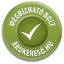
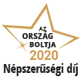
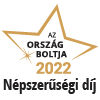

Az ország elsőszámú aukciós weboldalán!
Üdvözöljük a weboldalunkon, ahol lehetősége van részt venni különböző aukciókon.
|  |
Megbízható Bolt Program Ez a bolt elnyerte a Megbízható Bolt minősítést a vásárlást követő vevői értékelések alapján: 90 nap alatt legalább 60 vélemény esetén, amennyiben a vélemények átlaga eléri a 4,6-t. A "Megbízható Bolt Program" szolgáltatás a vásárlók érdekében készült, ösztönözve a webshopokat minél jobb minőségű szolgáltatás nyújtására. Célja, hogy az online boltok valódi vásárlói továbbíthassák véleményét a vásárlás előtt állók felé. A vásárlás után a felhasználó egy kérdőívet kap, amelyben értékelni tudja a bolt szolgáltatását. |
| Ország Boltja 2019 Népszerűségi díj I. helyezett Ez a bolt elnyerte a(z) I. helyet az Ország Boltja 2019 Népszerűségi díjaiért induló versenyen a(z) Számítástechnika termékkategóriában. A Népszerűségi díj az internetes felhasználók díja, az ő szavazataik alapján választottuk ki 2019 legnépszerűbb boltjait. A Népszerűségi kategóriákban a 3 legtöbb szavazatot összegyűjtő boltot díjaztuk termékkategóriánként. |
|
|  |
Ország Boltja 2020 Népszerűségi díj I. helyezett Ez a bolt elnyerte a(z) I. helyet az Ország Boltja 2020 Népszerűségi díjaiért induló versenyen a(z) Műszaki cikk és mobilkommunikáció termékkategóriában. A Népszerűségi díj az internetes felhasználók díja, az ő szavazataik alapján választottuk ki 2020 legnépszerűbb boltjait. A Népszerűségi kategóriákban a 3 legtöbb szavazatot összegyűjtő boltot díjaztuk termékkategóriánként. |
|  |
Ország Boltja 2022 Népszerűségi díj I. helyezett Ez a bolt elnyerte a(z) I. helyet az Ország Boltja 2022 Népszerűségi díjaiért induló versenyen a(z) Számítástechnika termékkategóriában. A Népszerűségi díj az internetes felhasználók díja, az ő szavazataik alapján választottuk ki 2022 legnépszerűbb boltjait. A Népszerűségi kategóriákban a 3 legtöbb szavazatot összegyűjtő boltot díjaztuk termékkategóriánként. |